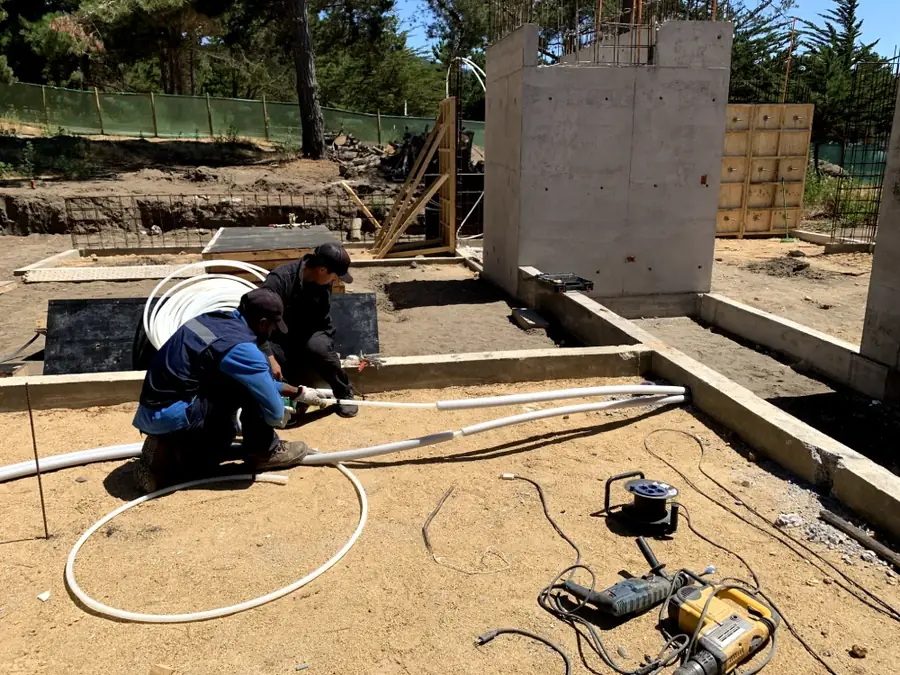
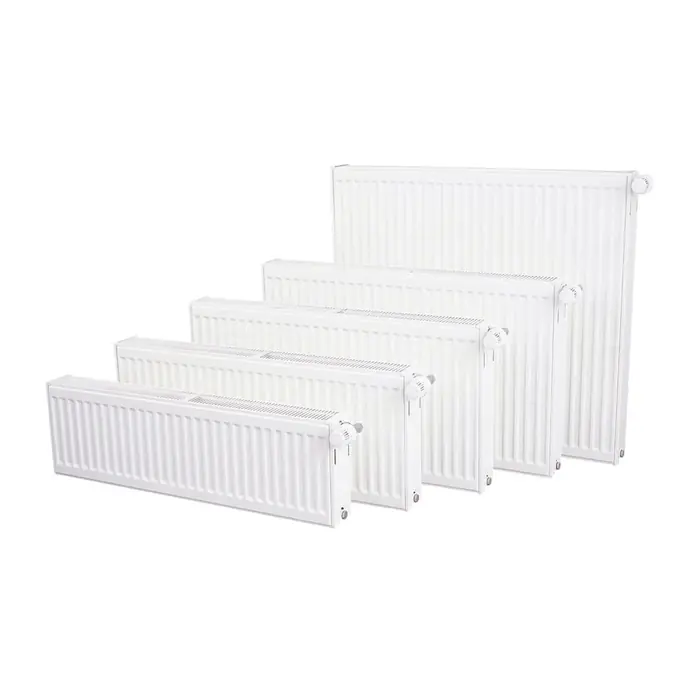
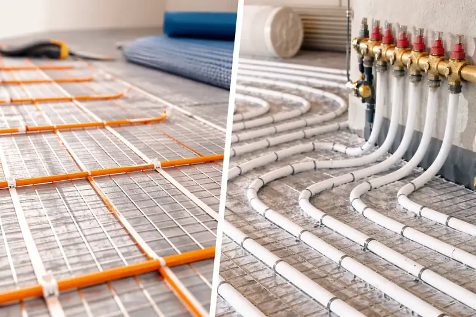

Qué es y cómo funciona
Una caldera calienta agua en un circuito cerrado que alimenta radiadores o losa radiante y, según el modelo, también el agua caliente de la casa. Puede funcionar a gas o a petróleo, y la elección depende del combustible disponible, del consumo y del espacio con que cuentes.
En el sur de Chile, donde la calefacción trabaja gran parte del año, una caldera bien dimensionada y bien mantenida marca la diferencia en consumo y en seguridad.
Las calderas murales ocupan poco espacio y se instalan en una sala técnica o en un recinto ventilado. Los equipos de mayor potencia necesitan más espacio.

Con qué sistemas se conecta
La caldera calienta el agua y la envía a los radiadores o a la losa radiante de tu casa. También puede abastecer un acumulador de agua caliente.


Ventajas
- Calefacción central para toda la vivienda desde un solo equipo
- Compatible con radiadores y con losa radiante
- Agua caliente según el modelo: caldera mixta o conectada a un acumulador
- Opción de gas o de petróleo, según el combustible disponible
- Calienta rápido y responde bien en días de mucho frío
- Control de temperatura por termostato o por zonas
Qué hacemos
Atendemos calderas a gas y petróleo en Panguipulli y en toda la Región de Los Ríos.
- InstalaciónSelección de potencia, montaje, conexión al circuito, evacuación de gases y puesta en marcha.
- MantenciónLimpieza del quemador, revisión de presión, válvulas de seguridad y evacuación de gases. En petróleo, también filtros y boquilla.
- ReparaciónFallas de encendido, bloqueos, pérdida de presión, ruidos y filtraciones.
Cuándo conviene llamarnos
- La presión sube o baja sin explicación
- La caldera se bloquea o se apaga sola
- Llama amarilla o irregular, o restos de hollín
- Golpeteos o ruido de agua hirviendo
- Radiadores que calientan mal o no calientan
- El consumo de combustible subió sin que cambiaras tu uso
- Goteos o manchas de humedad alrededor del equipo
Mantención recomendada
Una revisión al menos una vez al año, idealmente antes del invierno, mantiene el equipo seguro y eficiente. Conviene hacerla aunque la caldera funcione bien.
Preguntas frecuentes
¿Gas o petróleo?
¿Cada cuánto conviene hacer mantención?
¿La caldera sirve también para el agua caliente?
¿Qué hago si siento olor a gas?
¿Tu caldera necesita revisión o quieres instalar una nueva?
Cuéntanos qué necesitas y coordinamos tu visita y tu presupuesto.